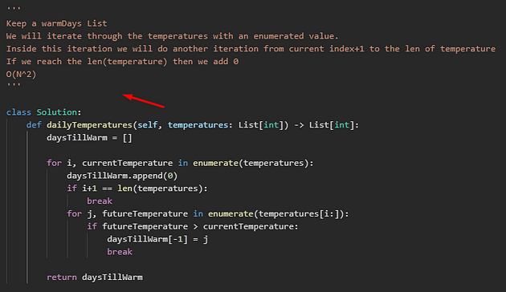
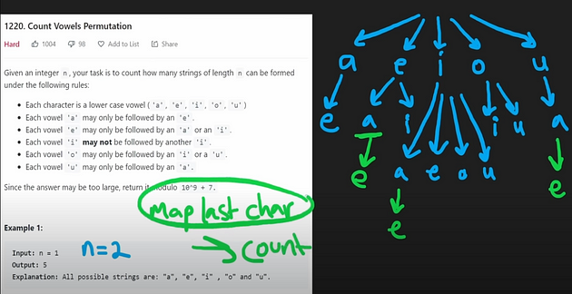
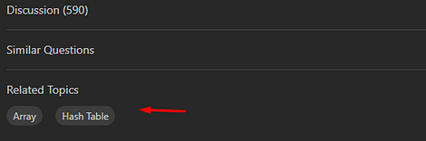
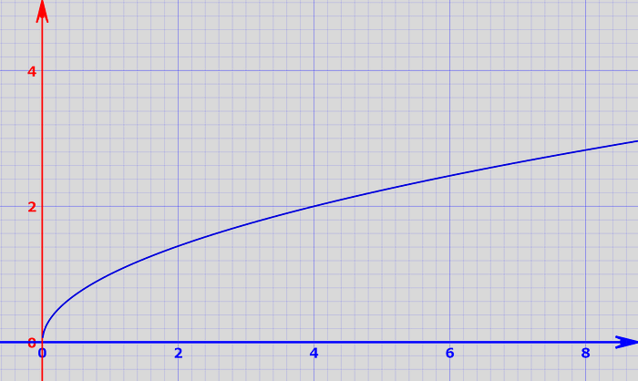

The biggest issue for a lot of potential LeetCoder's is, they simply don't "get it", if that makes any sense. They open up the LeetCode problem, read the description and blank on the code.
Further, they can try to write the code but have no idea how verify what they are doing not how to progress. They don't understand how to "get good". This blog post is all about that, how to "get good".
My post here explains a lot of things that are simply not said anywhere else and are essential for progress. You should, after reading this, "get it", and finally be able to become a good LeetCode problem solver.
The Core of LeetCode Problems Is Dry Running
In normal coding we only need to account for specific use cases and a few edge cases. In LeetCode problems or "whiteboarding", we need to account for ALL possible edge cases and come up with a final algorithm. For this we need to understand the code on a much deeper level.
The only way to get to this deeper level is with "dry running". Dry running or "practice running" is the very core of solving LeetCode problems. It is where we act as compiler, storing variables and running through the code logic. We can do this because the variable count and logic is finite.
We do this because it is the only sure way to truly understand the intricacies of the code, without which, problem solving is futile. This dry running is dependent on both past preparation and practice. With preparation being known theory and practice being dry running experience itself.
We need the theory in order to dry run and the dry run in order to understand the code and we need to understand the code to test all edge cases. If and only if we obtain all edge cases do we find the actual solution.
Theory vs Problem Solving
The preparation or "theory" is essentially an understanding of data structures, algorithms, programming language, and knowing when to use all of these per situation. Every problem has a required set of necessary theory. This means it is impossible for you to create a potential solution without the required theory of the solution.
It really is a chicken or the egg problem between solution and theory. We would need to use our cognitive faculties to both invent the newly required theory on the spot and the solution from previous practice and preparation. This is possible and often required.
However, there are two caveats…
One, everybody needs a starting cache of theory. It is impossible to derive new things from nothing and no one is an exception, even those with crazy cognitive abilities. Though the greatest version of learning is self-invention, it is easier to invent more theory when you already have past theory stored up.
The more theory you understand and have practice with, the easier it is to learn and create more theory.
Two, less theory is needed to re-invent more theory if you have a higher IQ or cognitive faculty. Sadly, the more naturally talented a person is, the less they need to get started in terms of knowledge. For 90% of us we require doing many problems and learning much theory in order to achieve the same results as those naturally talented.
Though, don't be discouraged, they are the exception, good on them. You can still achieve the same results.
How to Learn Theory
I recommend learning theory while solving problems. For each problem the goal should be to learn as much theory as required for dry running the problem. Both the terminology and understanding the theory is required.
The goal should be increased and long lasting learning of theory so it could build on top of itself. Long lasting learning comes from make the problems and intricacies seem as important as possible which is much easier and best done by self-inventing as much theory as you can on the spot then dry running that new theory.
As you use theory in dry running, it becomes engrained in your mind as patterns and the theory is solidified. Though, a good chunk of the theory is impossible to learn without reading and watching then synthesizing your own solution. Also, just generally, you need to increase your theory.
A good resource for this is to look up terms, algorithms and programming language examples on a Large Language Model(LLM) such as Google's AI, Chat-GPT or a search engine. A YouTube channel I recommend is NeetCode for explaining the theory within a problem(without looking at the code solution).
Remember self-invention/synthesizing things yourself is the easiest and best way to engrain patterns and use cases into that brain of yours.
How to Problem Solve
Try to first solve as much of the problem as possible without knowing any hints (for longer lasting learning). Begin by creating a pseudo solution based on theory you already know and can self-invent. Let it be a guide for the actual coding portion, like this:
After writing the pseudo-code and writing out a draft code solution, do not run the code. Dry run the code. There should already be a fully dry-runned code solution before there ever is an execution.
A sure sign that you are not learning theory and not training dry running is, you are executing the code over and over again, printing the potential variables. Of course, there are warranted reasons to do this, to verify the language does what you think it does, correcting syntax and of course verifying all your dry runs.
But, typically, you want to fully dry run your code with a few test cases and account for edge cases. When you do this, use either an annotation tool or go classic with paper. Like this:
I like to use gInk, but you can use whichever method you like. For the majority of us, it is impossible to keep 10+ variables in your head while running code logic and adequately explaining the problem.
Drawing things out is just a part of dry running. Think of this as a requirement. In addition, you must learn how to draw each data structure and algorithm when using them. Count this as part of learning theory or preparation.
You can learn how to draw problems by observing others, especially NeetCode explanations and just trying problem out yourself. It also takes a load off your viewer if you are explaining things live.
When you are done, always watch the theory explanation
Even if you solve a problem without outside help, always watch a theory explanation(NeetCode) afterward to build up your theory cache. You will need to it to learn data structures, algorithms, use cases and how to draw and annotate.
If you are stuck, slowly reveal hints
If you get stuck as you attempt to solve the problem, slowly reveal hints to help you along. Start with the topic hint here:
Try to figure it out from that. If you still cannot think of a solution or derive necessary theory, watch a solution explanation, typically NeetCode, without looking at any code. Use it to create your own code solution or rewrite your pseudocode.
If you still cannot think of a solution or derive necessary theory, watch the code solution and dry run it. Typically this would be at the end of a NeetCode video or other YouTuber.
Dry run it with a couple of test cases. If you fully understand it, take a break, come back 15min-1hour later and write the code from memory without any hints. Dry run it before executing and move on.
If you still don't understand the code solution from NeetCode or a YouTube video. The final thing you can do is look up solutions in the LeetCode solutions tab and try to find the one you best understand.
Then dry run a couple of test cases. If you fully understand it, take a break, come back 15min-1hour later and write the code from memory without any hints. Dry run it before executing and move on. This was the best you could do.
Summary of revelation, as you cannot solve it:
- Look at hint topic
- Watch theory explanation
- Watch code solution + dry runs, redo from memory + dry runs
- Read LeetCode code solution + dry runs, redo from memory + dry runs
*Give each of the steps above a real best effort before moving to the next.
Your Brain Will Adapt
Interestingly, the brain is a plastic organ. It is capable of adapting to a variety of circumstances and practices. It can learn things like reading comprehension, music, writing, public speaking, sports and many other skills.
Whiteboarding/LeetCode is no different. It is a skill whereby the brain can adapt to every individual component. At the beginning you can only hold 1 or 2 variables while running through 1 for loop, 3 lines long. Eventually, the brain adapts to running 5+ variables, 10+ lines of code, 2 loops and 5 conditions. Further down the road, the brain can run through 20+ lines of code and keep together 10+ variables on a long list of algorithms.
As dry running improves easys become easy, mediums become medium and hards become, well just hard and not impossible. Your % chance of encountering a problem you can solve increases and it becomes second nature to you.
The brain adapts and LeetCode simply is easier. If you wanted to see what the progress looks like, take a look at sqrt(x):
What Order Should I Solve Problems?
For years the de facto standard for problem solving order was the Blind75. However, its creator made a new and improved version called the Grind75. I recommend going through the easys first and moving into the harder problems, learning all the theory and dry running within each problem.
It is a good idea to read through his Tech Interview Handbook as well. You can extend the problem list to Grind169 as well, which is an option to make progress easier.
I don't recommend going topic by topic due to how difficult mediums can be at first, especially because they involve dry running more complex code. Doing all the easys across a variety of topics will adapt the brain with more ease, in my opinion.
Overrated Resources
Not all resources are equally helpful. Here are some to be cautious of:
- Cracking The Coding Interview book: The format is not as easily digestible compared to the above methods.
- NeetCode.io: The roadmap on NeetCode uses a topic first approach which is not brain friendly.
- Udemy courses: Udemy instructors don't do a good job explaining problems nor any of the things in this post.
Conclusion
Becoming proficient at LeetCode is achievable with the right strategies. Embrace dry running, balance theory with practice, and watch your problem-solving skills improve over time. Stay persistent and remember that LeetCode success is within your reach.
Anywho, I hope you learned something…
Happy coding!
Resources
Screen drawing app: https://github.com/geovens/gInk
Tech Interview Handbook: https://www.techinterviewhandbook.org/
Grind75: https://www.techinterviewhandbook.org/grind75
NeetCode channel: https://youtube.com/playlist?list=PLot-Xpze53lfOdF3KwpMSFEyfE77zIwiP&si=-yuvkxvWzDAXMBE1